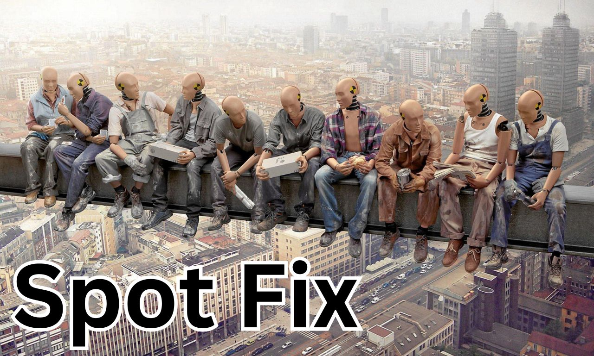
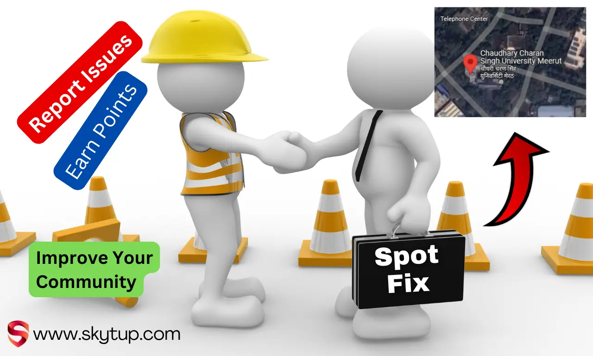

Report Issues
Help improve your surroundings and earn Fix Points!
Developed by skytup.com
Click on the map to report an issue
Recent Issues
No issues reported yet. Be the first!
Highlights

Report Any Issues

Upvote the Work
Suggest improvements

Earn Points